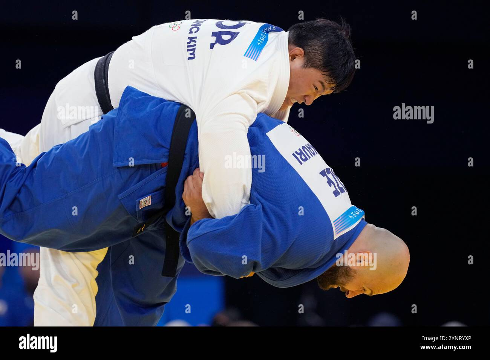
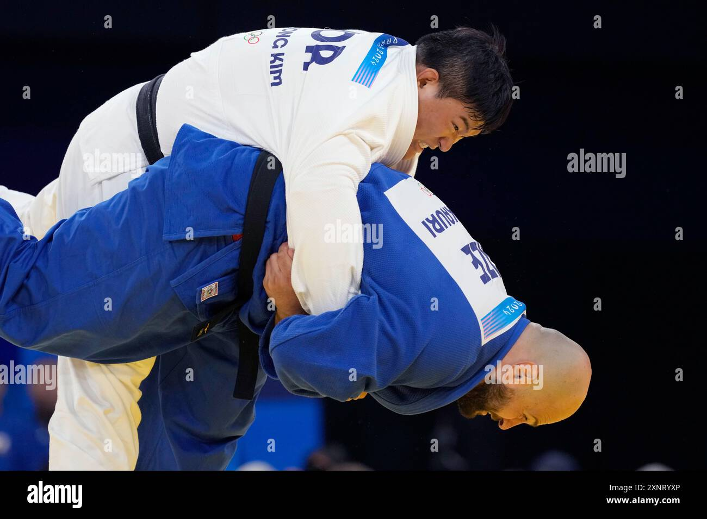
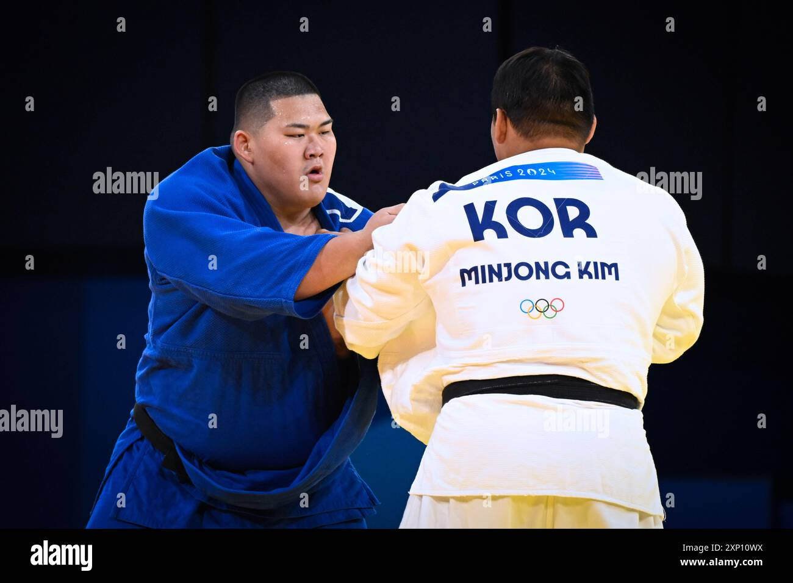
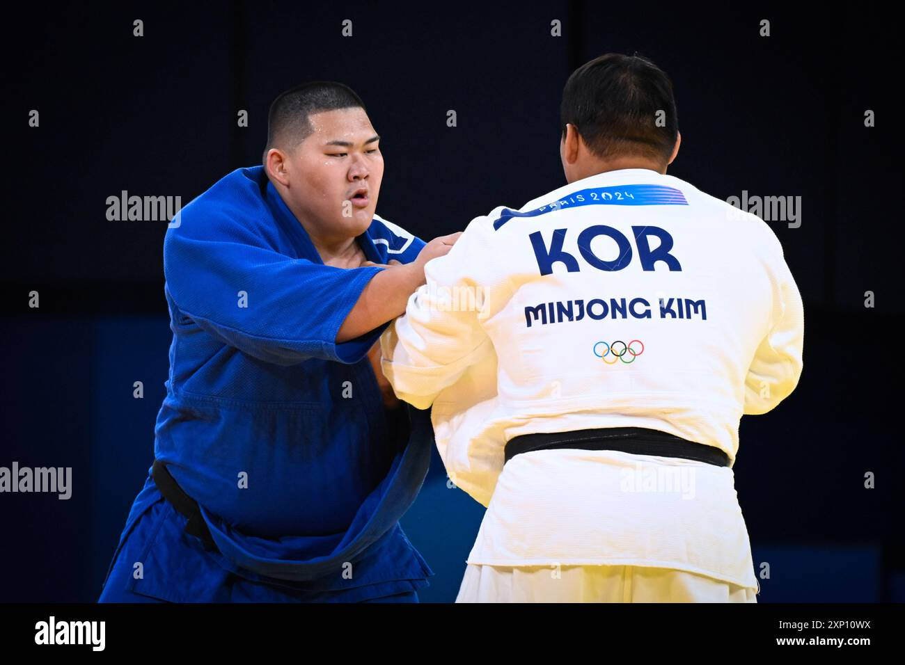

Article 1 : La catégorie +100 kg au judo, un choc des titans
L’épreuve des +100 kg aux Jeux Olympiques de Paris 2024 incarne la puissance et la technique à leur apogée. Réservée aux judokas les plus imposants, cette catégorie met en avant des combats où chaque prise peut être décisive. Devant son public, le Français Teddy Riner sera l’homme à battre, face à des adversaires redoutables comme Guram Tushishvili ou Lukas Krpalek. Avec des projections spectaculaires et une ambiance électrique, cette compétition promet d’être l’un des moments forts des Jeux.
Article 2 : L’épreuve +100 kg, symbole de grandeur aux JO de Paris 2024
Les +100 kg en judo sont une catégorie unique, alliant force brute et maîtrise technique. Aux Jeux Olympiques de Paris 2024, les meilleurs judokas du monde s’affronteront pour l’or, dans une ambiance survoltée. La légende française Teddy Riner visera un nouveau sacre olympique, tandis que d’autres géants comme Guram Tushishvili tenteront de lui barrer la route. Ce duel au sommet, où chaque combat est une démonstration de courage et de talent, promet d’écrire une nouvelle page dans l’histoire du judo.
 Accueil
Accueil
 Athlètes
Athlètes Sites Olympiques
Sites Olympiques Disciplines
Disciplines Epreuves
Epreuves Paralympiques
Paralympiques

.jpg) 

.jpg) 

.jpg)